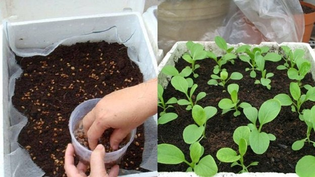
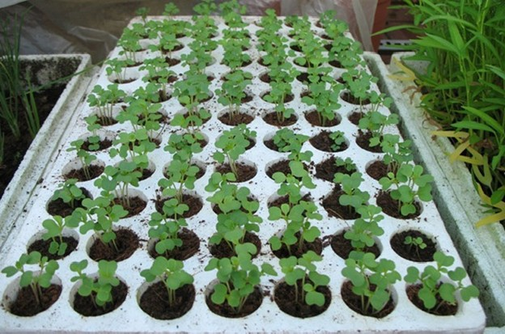
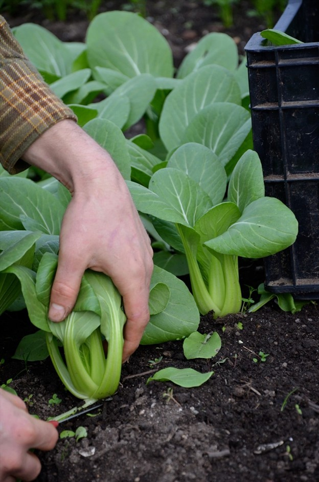

Hạt giống cải thìa thuộc họ thập tự, là loại rau quen thuộc trong ẩm thực Việt và Trung hoa. Rau có vị giòn, ngọt, tính mát, là thực phẩm dưỡng sinh, ăn vào có thể lợi trường vị, tán hàn tiêu thũng, thanh nhiệt giải độc, lợi tiểu tiện và ngừa bệnh ngoài da. Tự tay gieo trồng cải thìa tại nhà giúp cung cấp một loại thực phẩm có hàm lượng vitamin C đứng vào bậc nhất trong các loại rau sạch Organic.
1. Tại Sao Nên Chọn Hạt Giống Cải Thìa?
Phát triển nhanh: Cải thìa có thể thu hoạch sau 25-30 ngày.
Dễ trồng: Cải thìa không yêu cầu chăm sóc phức tạp, thích hợp với nhiều loại đất.
Dinh dưỡng cao: Chứa nhiều vitamin A, C, canxi, sắt và chất xơ.
Chịu sâu bệnh tốt: Ít bị sâu bệnh, giảm cần sử dụng hóa chất.
2. Chuẩn Bị Trước Khi Trồng Hạt Giống Cải Thìa
Để chuẩn bị trước khi trồng hạt giống cải thìa, bạn cần thực hiện các bước sau:
Chọn đất:
Đất phải tơi xốp, thoát nước tốt, giàu dinh dưỡng.
Phù hợp với pH đất từ 6.0 - 7.5.
Cải tạo đất:
Cày xới đất để thông thoáng, dễ thoát nước.
Bón phân hữu cơ hoặc phân chuồng đã hoai mục để tăng độ dinh dưỡng.
Chuẩn bị hạt giống:
Ngâm hạt giống vào nước ấm (30°C) khoảng 2-3 giờ để kích thích nảy mầm nhanh.
Chọn thời gian trồng:
Trồng vào mùa xuân hoặc thu khi nhiệt độ từ 18°C - 25°C.
Chọn vị trí trồng:
Chọn khu vực có đủ ánh sáng mặt trời, ít gió.
HÌNH ẢNH

Hạt giống cải thìa
3. Quy Trình Gieo Hạt Giống Cải Thìa
Quy trình gieo hạt giống cải thìa gồm các bước sau:
Chuẩn bị đất:
Làm đất tơi xốp, sạch cỏ, xới nhẹ để đất thoáng.
Nếu trồng trong thùng xốp, đục lỗ thoát nước.
Gieo hạt:
Tạo rãnh sâu 1-2 cm, khoảng cách giữa các rãnh 15-20 cm.
Rải hạt giống đều lên rãnh, tránh để hạt quá dày.
Lấp nhẹ một lớp đất mỏng lên hạt.
Tưới nước:
Tưới nhẹ nhàng để giữ ẩm cho đất, tránh làm xói mòn hạt.
Đảm bảo đất luôn ẩm nhưng không ngập úng.
Che phủ:
Nếu trồng ngoài trời, có thể phủ một lớp rơm hoặc nilon mỏng để giữ nhiệt và độ ẩm cho hạt.
Chăm sóc sau khi gieo:
Sau 3-5 ngày, hạt sẽ nảy mầm. Tiếp tục tưới nước đều đặn, giữ cho đất ẩm.
HÌNH ẢNH VỚI CHÚ THÍCH : Hướng dẫn cách chăm sóc và gieo trồng hạt giống cải thìa

Hướng dẫn cách chăm sóc và gieo trồng hạt giống cải thìa
4. Chăm Sóc Cải Thìa Sau Gieo Trồng
Tưới nước:
Tưới nước đều đặn, duy trì độ ẩm cho đất nhưng tránh úng.
Tưới vào sáng sớm hoặc chiều mát để tránh làm cháy lá.
Thư giãn đất:
Xới nhẹ đất xung quanh gốc để tránh đất bị nén chặt, giúp rễ cây phát triển dễ dàng.
Giữ đất thoáng, tơi xốp.
Bón phân:
Bón phân hữu cơ hoặc phân vi sinh khi cây có 3-4 lá thật để cung cấp dinh dưỡng.
Bón thêm phân đạm, lân và kali khi cây phát triển lớn.
Tỉa cây:
Tỉa bớt cây nếu gieo quá dày để cây có không gian phát triển.
Loại bỏ lá già, héo để cây không bị sâu bệnh.
Kiểm tra sâu bệnh:
Theo dõi và kiểm tra thường xuyên để phát hiện sâu, bệnh như sâu ăn lá, rệp, nấm.
Dùng biện pháp tự nhiên hoặc thuốc bảo vệ thực vật (nếu cần) để xử lý.
Che nắng:
Nếu trời quá nóng, có thể dùng lưới che để giảm tác động của nắng trực tiếp.
5. Thu Hoạch Cải Thìa
Cải thìa thường thu hoạch sau 25-30 ngày từ khi gieo hạt, khi cây cao từ 20-30 cm và lá xanh tươi.
HÌNH ẢNH VỚI CHÚ THÍCH : Hạt giống cải thìa trong mùa thu hoạch

Hạt giống cải thìa trong mùa thu hoạch
Thu hoạch vào sáng sớm khi cây chưa bị nắng nóng sẽ giúp cải thìa giữ được độ tươi và giá trị dinh dưỡng cao.
6. Một Số Lưu Ý Khi Trồng Hạt Giống Cải Thìa
Đặt cây ở nơi có ánh sáng đầy đủ, nhưng tránh ánh nắng gay gắt vào buổi trưa.
Trồng cây cách nhau tối thiểu 30 cm để đảm bảo không gian phát triển.
Duy trì vệ sinh khu vực trồng để hạn chế sâu bệnh.
7. Lợi Ích Khi Trồng Cải Thìa Tại Nhà
Thực phẩm sạch: Không hóa chất, an toàn cho sức khỏe.
Tiết kiệm chi phí: Giảm chi phí mua rau.
Dinh dưỡng cao: Giàu vitamin và chất xơ.
Dễ trồng: Phù hợp với không gian nhỏ.
Tự cung tự cấp: Chủ động nguồn thực phẩm.
Giảm stress: Chăm sóc cây giúp thư giãn.
Bảo vệ môi trường: Giảm sử dụng bao bì nhựa.
Kết Luận
Trồng cải thìa tại nhà mang lại nhiều lợi ích: rau sạch, tiết kiệm chi phí, dễ chăm sóc và cung cấp dinh dưỡng cao. Nó cũng giúp bạn chủ động về thực phẩm, giảm stress và bảo vệ môi trường. Hãy liên hệ với chúng tôi để được tư vấn và hỗ trợ chi tiết.